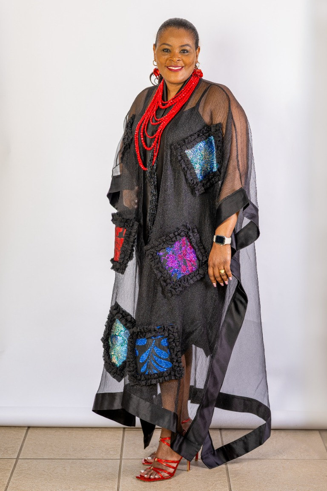
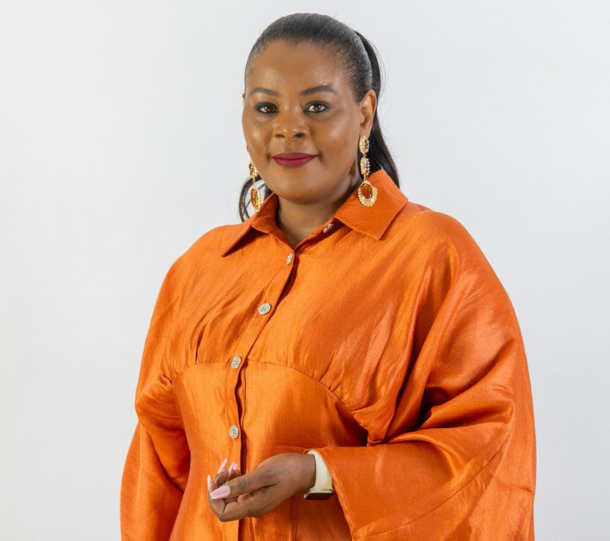

Prayer first
We make room to seek God together, trusting prayer to change hearts, homes and futures.
Rooted in prayer, shaped by sisterhood and open to every woman ready to grow in faith.

Pastor Judy Achero is a wife, mother, pastor and teacher of the Word. Alongside her husband, Pastor Ben Achero, she serves at Jubilee Christian Church, a vibrant congregation in the heart of Johannesburg. She also leads Daughters of Zion, a women’s ministry in South Africa that hosts interdenominational conferences, creating life-changing spaces for women to gather, worship and grow.
Judy’s passion for raising women of prayer led her to found Warrior Women Prayer Movement in 2020. The movement gathers women for weekly prayer meetings and a monthly three-hour Prayer Stretch in Sandton on the second Saturday and Pretoria on the third Saturday of each month.
She is also the founder of the Modimo Uluthando Foundation, a registered non-profit organisation (NPO 250-800) dedicated to supporting people in need in the community. With a background in Accounting, a Bachelor’s degree in Theology and a Master’s degree in Ministry, Judy brings faith, learning and compassion to her work.
Through ministry, writing and honest conversation, she encourages women to grow in faith and live with purpose. She hosts Deep Talk with Judy, a talk show exploring real-life issues, with episodes available on YouTube, and the Let’s Talk Prayer with Pastor Judy podcast.
Explore her YouTube channelWarrior Women Prayer Movement is an interdenominational gathering for women, united by one agenda: prayer. We believe battles are best fought and won on our knees. This is a place for women to rise and revive their prayer altars.
We are women who believe prayer changes everything: women who travail at the altar for restored marriages, broken strongholds, children’s destinies to be birthed, darkness to be pushed back and God’s order to be ushered in. We are Esthers who intercede for our nation, Hannahs who persevere in prayer, Shunammite women who declare, “Not my child,” and Abigails who courageously stand for their husbands and families.
In the midst of every battle, prayer invites God into the fight—and God has never lost a battle. Join us in prayer and sisterhood as we seek His will together.
Find a prayer gathering
Our anchor is Jeremiah 9:17–18: “Thus says the LORD of hosts: ‘Consider and call for the women, that they may come; and send for skillful wailing women, that they may come. Let them make haste and raise a wailing over us.’”
We make room to seek God together, trusting prayer to change hearts, homes and futures.
We welcome women across generations and backgrounds into a sisterhood built on care and faith.
We encourage women to live what they believe—with courage, compassion and purpose.
From prayer gatherings to conversations about everyday life, there are many ways to connect with the movement.
Warrior Women hosts weekly prayer meetings and monthly three-hour Prayer Stretches: Sandton on the second Saturday and Pretoria on the third Saturday of each month.
Deep Talk with Judy explores real-life issues through open conversation. Watch available episodes on the Warrior Women YouTube channel.
Through the Modimo Uluthando Foundation (NPO 250-800), Judy supports people in need in the community.